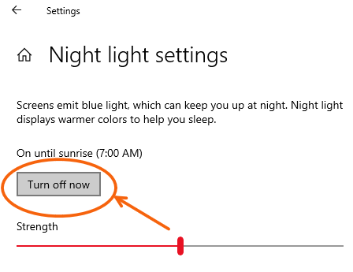

In the first section of the experiment, different images will appear in the center of the screen. You can adjust the images by pulling the slider below them with your mouse. You goal is to make the images look like what you experience in your day-to-day life.
Before we start, please make sure to:
- 1) Make your current enviroment as dark as possible (e.g. switch off the lights, close the curtains)
- 2) Set your screen brightness to maximum
- 3) Turn off any color adjuments on your screen such as NightMode or NightShift

when you are ready, press the button below to begin the practice trial.